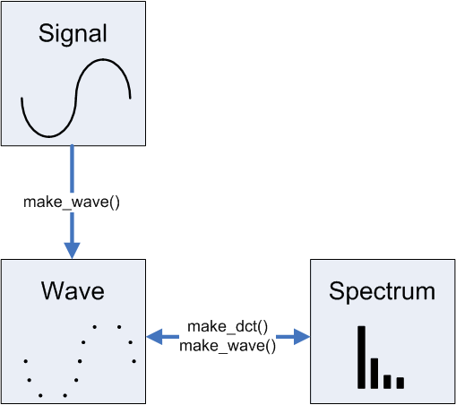

Digital Signal Processing library for PHP is a set of classes for creating and analyzing digital signals. It contains operations for converting between continuous signals to discrete signals, and to move data back and forth from time domain to frequency domain.
Its classes and code are ported from Python code in "Think DSP", a great book by Allen B. Downey.
Due to limitations in PHP language, DFT is not supported, while DCT is.
This library uses NumPHP for running matrix and vector operations.
This image shows the relationships between the classes and methods for creating one object from the other:

Using Composer:
$ composer require mason88/phpdsp
Or download directly from Github: Github repository